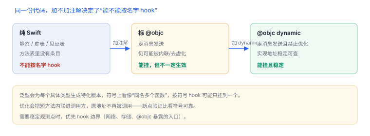

Swift 支持与限制
同一个“方法”，在 Swift 里可能根本没有方法表项
Swift 有四种派发：静态、类虚表、协议见证、Objective-C 消息。只有最后一种能直接按选择子 hook。打不中的原因通常不是工具，而是方法压根没走消息发送。
1. 四种派发与可 hook 性
| 派发方式 | 典型写法 | 能否按名字 hook |
|---|---|---|
| 静态 | final、值类型方法、全局函数 | 不能，只能按地址 |
| 类虚表 | 可继承的类方法 | 不能按选择子，需按 vtable 偏移或地址 |
| 协议见证 | 通过协议类型调用 | 不能，需定位见证表项 |
| Objective-C 消息 | @objc、dynamic、继承 NSObject 并暴露 | 能，ObjC.classes 可见 |
2. 什么样的 Swift 方法能被 ObjC 桥看到
- 标了
@objc，或类型继承自NSObject且方法被隐式暴露。 - 标了
dynamic，强制走消息发送（KVO、交换的前提）。 - 实现协议中带
@objc要求的方法。 - 被
@objcMembers修饰的类里的成员。
先确认它在不在 Objective-C 方法表里
const cls = ObjC.classes.LoginService;
console.log(cls ? cls.$ownMethods : 'class not visible to ObjC');
3. 打不中时的三条路
| 路径 | 做法 | 代价 |
|---|---|---|
| 改源码 | 给自己的方法加 @objc dynamic | 需要重新构建，但最干净 |
| 按符号 | 用修饰名定位函数地址，按地址 hook | 符号随版本变化，泛型会分裂多份 |
| 换边界 | hook 它调用的 ObjC 边界（网络、存储、通知） | 看不到内部逻辑，但稳定 |
4. 泛型与内联
- 泛型函数会为每个具体类型生成特化版本，符号里带类型信息，看起来像多个同名函数。
- 优化开启后，短方法可能被内联进调用方，原地址不再被调用。
- 因此“符号存在”不等于“运行时执行它”；用断点确认比看符号可靠。
5. 对象布局不要依赖
Swift 类实例的头部含类型指针与引用计数相关字段，之后才是属性。字段顺序与对齐会随编译器、优化与属性包装变化，按固定偏移读字段在版本升级后必然失效。需要读状态时优先调用公开方法或 KVC（若暴露）。
6. 失败分流
| 现象 | 原因 | 查哪里 |
|---|---|---|
| 类取不到 | 未继承 NSObject 或未暴露 | 看类型声明与 @objc |
| 类在但方法不在 | 非 @objc 成员 | 枚举 $ownMethods 核对 |
| 按符号 hook 后无效果 | 被内联或调用的是特化版本 | 断点验证实际入口 |
| hook 生效但参数错位 | Swift 调用约定与 ObjC 不同 | 改用 ObjC 暴露的包装层 |
| 升级后偏移错乱 | 依赖了对象布局 | 改为调用方法读取 |
7. 建议顺序
- 先 hook 对外边界：网络请求、数据库读写、通知发送。
- 再 hook 标了
@objc的业务方法。 - 最后才用符号/地址进入纯 Swift 内部，并接受“版本一变就失效”。
泛型会分裂符号
同一份泛型代码会为不同类型生成多个特化版本，按符号 hook 时可能只挂到其中一个。
同一份泛型代码会为不同类型生成多个特化版本，按符号 hook 时可能只挂到其中一个。
8. 数据细节：符号里藏着什么
| 组成 | 含义 | 对 hook 的影响 |
|---|---|---|
| 前缀与长度 | 修饰名格式与总长度 | 长度错误即解析失败 |
| 模块名 | 所属 target | 同名类靠模块区分 |
| 类型与函数名 | 签名拼装后的标识 | 重载会生成多个符号 |
| 特化标记 | 泛型具体类型 | 一份代码可能对应多个实现 |
这就是“按符号 hook 只挂到一个版本”的根源：你以为挂了函数，其实挂了某个特化。
9. 自测
final方法为什么不出现在 Objective-C 方法表里？- 泛型为什么会生成多个符号？这对按符号 hook 有什么影响？
- 为什么不能按固定偏移读 Swift 对象字段？
- “先 hook 边界”在稳定性上有什么好处？